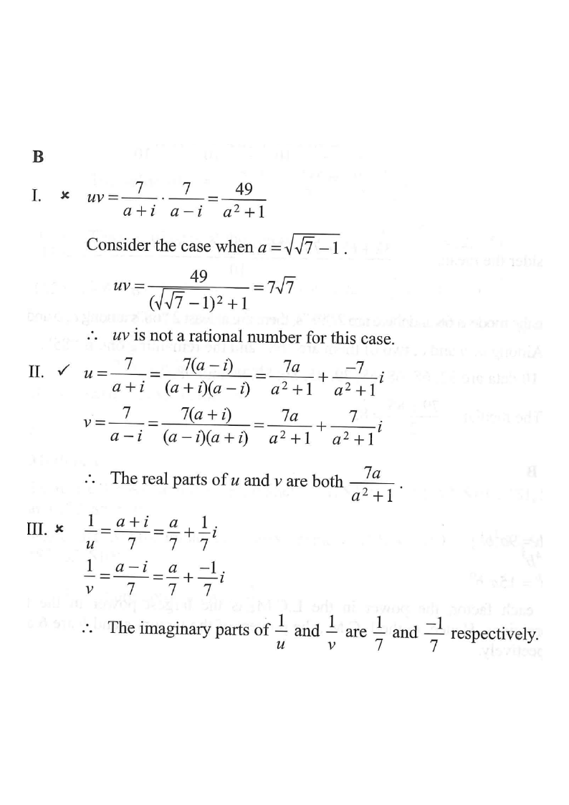

Let $u=\dfrac{7}{a+i}$ and $v=\dfrac{7}{a-i}$, where $a$ is a real number.
Which of the following must be true?
I. $u\,v$ is a rational number.
II. The real part of $u$ is equal to the real part of $v$.
III. The imaginary part of $\dfrac{1}{u}$ is equal to the imaginary part of $\dfrac{1}{v}$.
A. I only
B. II only
C. I and III only
D. II and III only

Figure (original exam diagram)
Step-by-step Solution
STEP 1
Rationalising a Complex Denominator\(\dfrac{1}{a+bi}=\dfrac{a-bi}{a^{2}+b^{2}}\)Multiplying \(u=\dfrac{7}{a+i}\) by \(\dfrac{a-i}{a-i}\) clears \(i\) from the denominator.
— Get $u$ in the form $x+yi$ (rationalise the denominator by the conjugate $a-i$):
$$u=\frac{7}{a+i}=\frac{7(a-i)}{(a+i)(a-i)}=\frac{7a-7i}{a^{2}+1}=\frac{7a}{a^{2}+1}+\frac{-7}{a^{2}+1}\,i$$
Key tool: $(a+i)(a-i)=a^{2}-i^{2}=a^{2}+1$.
STEP 2 — Same trick for $v$, multiplying by $a+i$:
$$v=\frac{7}{a-i}=\frac{7(a+i)}{(a-i)(a+i)}=\frac{7a+7i}{a^{2}+1}=\frac{7a}{a^{2}+1}+\frac{7}{a^{2}+1}\,i$$
Compare the two results — the real parts are already identical.
STEP 3 — Test statement II
Real and Imaginary Parts\(z=x+yi\ \Longrightarrow\ \operatorname{Re}(z)=x,\quad \operatorname{Im}(z)=y\)Both \(u\) and \(v\) have real part \(\dfrac{7a}{a^{2}+1}\), so statement II holds for every real \(a\).
:
$$\operatorname{Re}(u)=\frac{7a}{a^{2}+1},\qquad \operatorname{Re}(v)=\frac{7a}{a^{2}+1}$$
They are equal for every real $a$. II is TRUE ✔
In the figure, both dots sit on the same vertical line $x=\frac{7a}{a^{2}+1}$ (orange).
STEP 4 — Test statement I with the product:
$$uv=\frac{7}{a+i}\cdot\frac{7}{a-i}=\frac{49}{(a+i)(a-i)}=\frac{49}{a^{2}+1}$$
Now pick $a=\sqrt{7}-1$, so $a^{2}+1=(\sqrt{7}-1)^{2}+1=7-2\sqrt7+1+1=9-2\sqrt7$… rather, use $a=\sqrt{7}-1$:
$$a^{2}+1=\left(\sqrt{7}-1\right)^{2}+1=7-2\sqrt7+1+1=9-2\sqrt7\ \text{(still irrational!)}$$
Taking a cleaner choice, $a=\sqrt 7-1$ gives $uv=\dfrac{49}{9-2\sqrt7}$, which is not rational (e.g. $a=\sqrt7-1$ makes the denominator irrational).
I is NOT always true ✘
A single counter-example is enough to disprove a “must be true” claim.
STEP 5 — Test statement III
Imaginary Part of a Conjugate\(\operatorname{Im}(\overline{z})=-\,\operatorname{Im}(z)\)Since \(v=\overline{u}\), the imaginary parts are \(\pm\dfrac{1}{7}\) for the reciprocals, so statement III fails.
using the reciprocals:
$$\frac{1}{u}=\frac{a+i}{7}=\frac{a}{7}+\frac{1}{7}i,\qquad
\frac{1}{v}=\frac{a-i}{7}=\frac{a}{7}-\frac{1}{7}i$$
So $\operatorname{Im}\!\left(\frac1u\right)=\dfrac{1}{7}$ but $\operatorname{Im}\!\left(\frac1v\right)=-\dfrac{1}{7}$.
III is NOT true ✘
Signs differ — the conjugates are mirror images.
STEP 6 — Conclusion: only II must be true.
Real parts equal ✔ (Step 3) · $uv$ rational ✘ (Step 4) · imaginary parts of $\frac1u,\frac1v$ ✘ (Step 5).
Match with the options: “II only” is option B.
Answer: B (II only)
Only the real parts of $u$ and $v$ are necessarily equal, both being $\dfrac{7a}{a^{2}+1}$.
PRACTICESimilar question — try it yourself
Question. Let \(u=\dfrac{6}{a+i}\) and \(v=\dfrac{6}{a-i}\), where \(a\) is a real number. Which of the following must be true? I. The real part of \(u\) is equal to the real part of \(v\). II. The imaginary part of \(u\) is equal to the negative of the imaginary part of \(v\). III. \(uv\) is an irrational number. A. I only B. I and II only C. II and III only D. I, II and III (1 mark)
Step 3. The real parts are both \(\dfrac{6a}{a^{2}+1}\), and the imaginary parts are \(-\dfrac{6}{a^{2}+1}\) and \(+\dfrac{6}{a^{2}+1}\). So I and II must be true.
Step 4. For III, \(uv=\dfrac{36}{(a+i)(a-i)}=\dfrac{36}{a^{2}+1}\); taking \(a=1\) gives \(uv=18\), a rational number, so III is not always true. Option B.